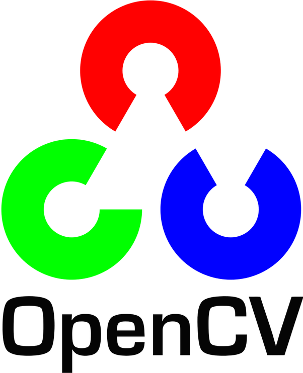

Nikhil Venkatesh
I am a senior in college studying computer science. Originally from India, I now study at Nanyang Technological University in Singapore. In my four years of college, I've experimented with a lot of technology and have now settled to develop robotics solutions. My current area of interest is Deep Learning for Autonomous Robotics. In my spare time, I take part in hackathons and work on some side projects (Check out my Github page :) ).
Experience
Software Engineering Intern
Developed multiple java based applications for PayPal's core stack. The project involved optimizations of PayPal's functional testing procedures. Worked on an application based on Aspect Oriented Programming to analyze functional metrics of one of the stacks.
Software Development Intern
Developed Computer Vision and Autonomous Flight Control algorithms for quadcopter drones based on the Pixhawk flight controllers. Developed a real time object detection algorithm using the OpenCV library for computer vision. Built the flight control software for autonomous hovering the drone above a known target using the dronekit-python library.
Education
Nanyang Technological University
CGPA: 4.66
Chettinad Vidyashram
Central Board of Secondary Education (India) Score: 96%
Skills
-

-

-

-

- 
- Deep Learning
- Autonomous Robotics
- Computer Vision
- Navigation Algorithms
Hobbies & Interests
I am an avid soccer fan. My favorite club is Chelsea F.C. I follow all their games. In my spare time, I play some soccer and badminton. I also enjoy swimming from time to time. As a young boy, I grew up eating a lot, so to this day I haven't lost an ounce of the appetite. I read the occassional book and watch too many TV shows for my own good. My current favorites are Game of Thrones, Sherlock and Brooklyn Nine-nine but all time favorite has to be F.R.I.E.N.D.S. Within Singapore, I tend to attend a lot of tech related events and talks and keep myself up to date with the on-going trends. I enjoy networking at such events. One of my most useful sources has been http://thelist.sg if any one wants to attend events as well.